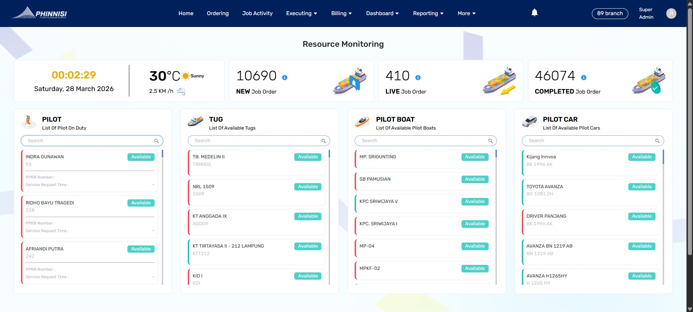
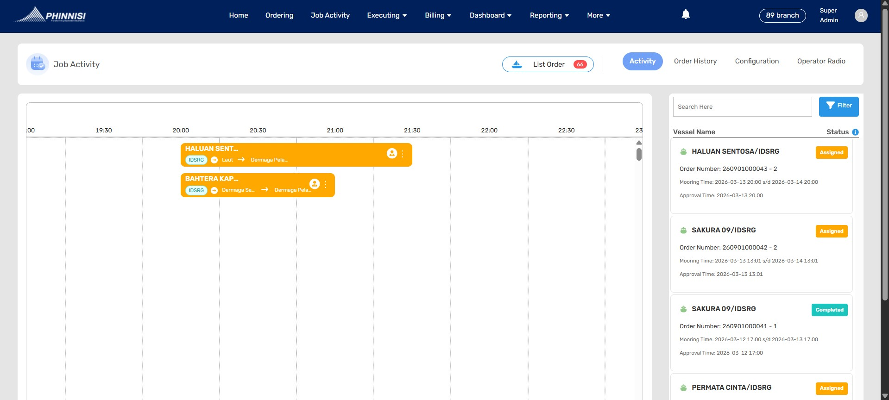
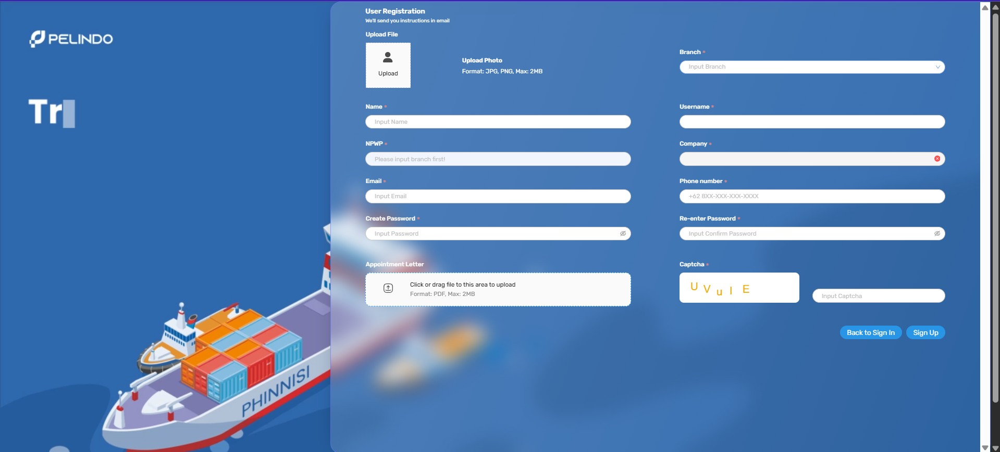
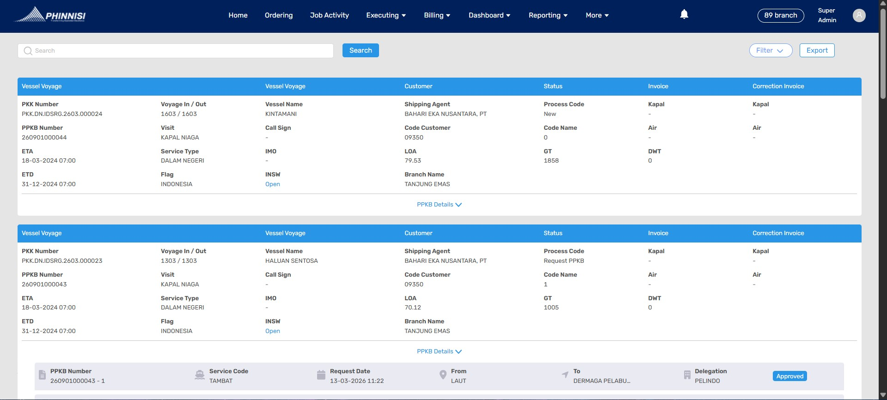
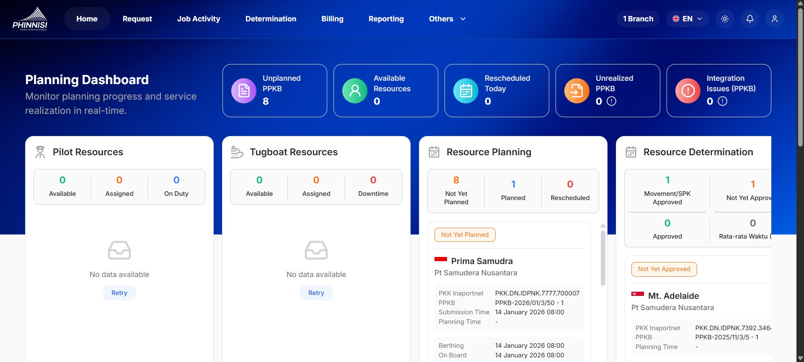
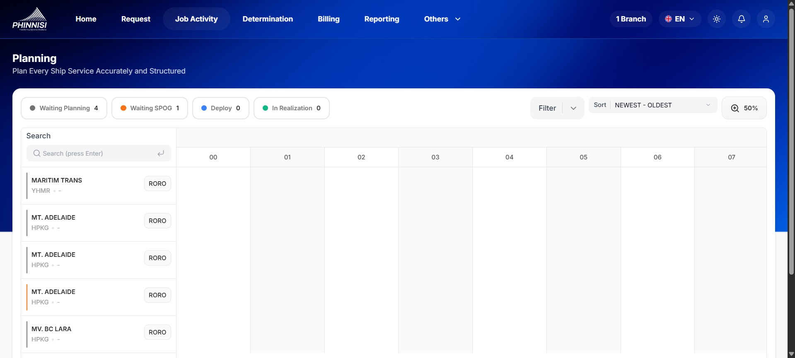
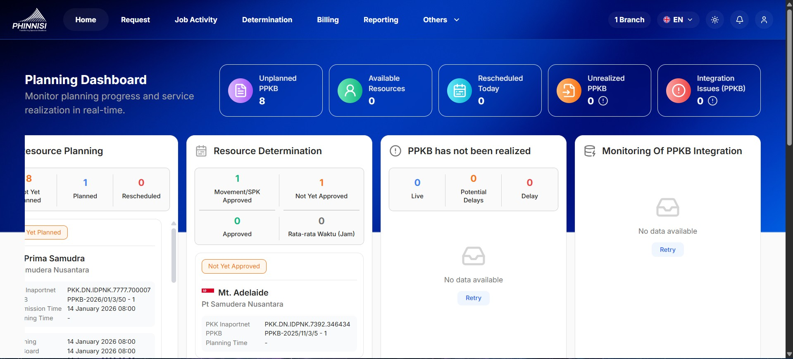
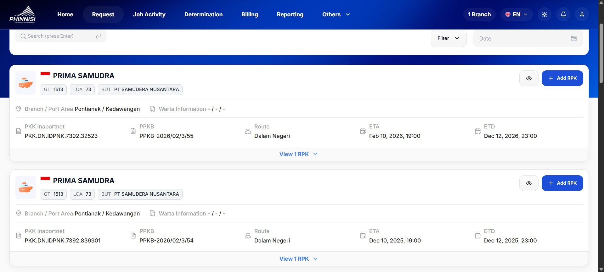

Halo, Saya
Prasetio Tri Irawan
Saya sangat bersemangat dan berdedikasi terhadap pekerjaan saya.

Business Analyst & QA
3+ Tahun Pengalaman
Lokasi
Jakarta, Indonesia
Profil Profesional
Sebagai Business Analyst dalam sistem standarisasi di industri maritim dengan fokus pada kualitas, kemudahan pengguna, dan kepatuhan regulasi. Memiliki keahlian dalam perencanaan fitur dan integrasi menggunakan metode Business Process Modelling untuk standarisasi operasional maritim dan stabilitas sistem.
Berkomitmen pada detail analisis kebutuhan dan sinergi tim. Berbekal pengalaman kuat sebagai QA Engineer, saya memastikan setiap spesifikasi bisnis memiliki kriteria yang jelas, terukur, dan dapat diuji.
Pengalaman Kerja
Riwayat karir profesional saya.
Business Analyst
Pelindo Solusi Digital (Kontrak)
- Bertanggung jawab dalam merancang dan mendefinisikan kebutuhan bisnis untuk sistem standarisasi pelayanan kapal (Phinnisi) di lingkungan operasional maritim atau operasional pelayanan kapal.
- Menjembatani komunikasi antara pemangku kepentingan bisnis dan tim teknis untuk memastikan setiap fitur baru pada sistem Phinnisi sesuai dengan regulasi kepelabuhanan dan standar operasional maritim.
- Melakukan analisis mendalam terhadap alur kerja pelayanan kapal guna menghasilkan dokumentasi teknis dan desain proses bisnis yang optimal dalam bentuk Product Requirement Document.
- Memanfaatkan latar belakang sebagai QA Engineer untuk memastikan bahwa setiap spesifikasi bisnis yang disusun memiliki kriteria penerimaan (acceptance criteria) yang jelas, terukur, dan dapat diuji secara teknis.
Software QA Engineer
Pelindo Solusi Digital (Kontrak)
- Berperan dalam mengeksekusi dan melaporkan hasil pengujian proyek pada tahap SIT (System Integration Testing) dan UAT (User Acceptance Testing).
- Membangun, memelihara, dan menjalankan skrip Automation Test menggunakan framework Playwright untuk mempercepat siklus pengujian.
- Berhasil menganalisis dan memeriksa validitas data secara mendetail menggunakan berbagai testing tools guna mengidentifikasi bug atau ketidaksesuaian sistem terhadap skenario test case.
- Melakukan eskalasi laporan bug dengan data pendukung yang komprehensif secara cepat demi memastikan proyek selesai tepat waktu sesuai target.
Quality Assurance
Bina Artha Ventura (Kontrak)
- Melakukan analisis dan verifikasi data manual dengan ketelitian untuk menjamin akurasi laporan.
- Menyusun dokumentasi temuan error atau ketidaksesuaian data berdasarkan skenario pengujian yang telah ditetapkan.
Proyek
Unggulan
Phinnisi
Sistem Standarisasi Pelayanan Kapal
Berperan dan berpartisipasi dalam validasi sistem standarisasi pelayanan kapal berskala nasional yang menjangkau lebih dari 90 cabang pelabuhan PELINDO di seluruh Indonesia.
Sebagai bagian dari Proyek Strategis Nasional (PSN), saya memastikan keberhasilan transisi dan pembaruan sistem dari fase Phinisi awal hingga mencapai Phinisi v3, dengan fokus utama pada integritas fitur dan kemudahan pengguna.
Detail Peran
- Validasi sistem di 90+ pelabuhan Indonesia
- Mengawal transisi sistem ke versi V3
- Memastikan integritas operasional maritim
Periode Proyek
Agustus 2022 - Saat ini
Galeri: Phinnisi Fase Awal

assets/dashboardv2.jpgTampilan Dashboard
Fase Awal

assets/pelayananv2.jpgModul Pelayanan
Fase Awal

assets/landingpagev2.jpgForm Registrasi
Fase Awal

assets/operasionalv2.jpgLaporan Operasional
Fase Awal
Galeri: Phinnisi v3

assets/dashboardv3.jpgDashboard v3
Pembaruan Antarmuka

assets/pelayananv3.jpgSistem Standarisasi
Optimasi Sistem

assets/integrasiv3.jpgIntegrasi Data
Phinnisi v3

assets/operasiv3.jpgPelayanan Kapal
Phinnisi v3
Pendidikan
Universitas YARSI
Teknik Informatika
September 2017 - November 2021
IPK Akhir
3.23